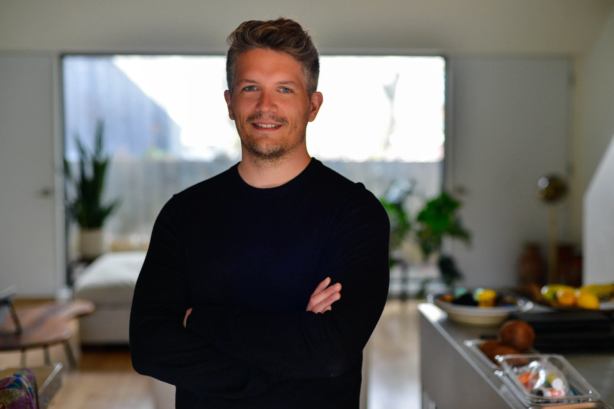

I'm an American computer scientist and entrepreneur. At 18, I moved to Montreal to study Software Engineering at McGill. After graduating, I joined YesGraph in San Francisco, a social graph analysis startup later acquired by Lyft.
In 2017, I returned to Montreal and joined Mila, completing an M.Sc. and PhD in AI. I was there as it grew from 70 to 1,400 researchers. After years of training models and co-authoring papers, I realized there was a better way to solve the meta-problem: improving how researchers search for, find, create, and share knowledge.
Now I run Tiptree Systems, a startup building AI systems for researchers. Here are my resume and Google Scholar.